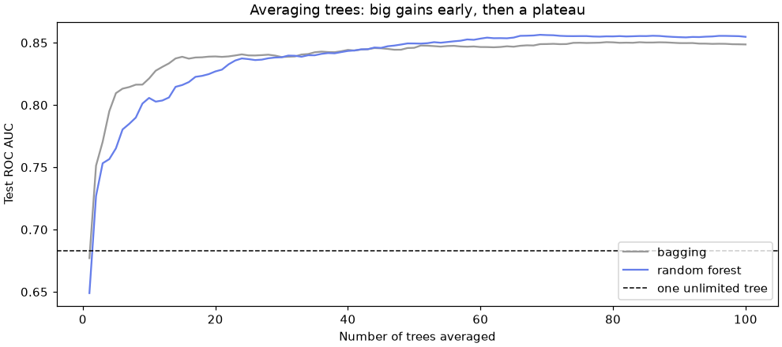
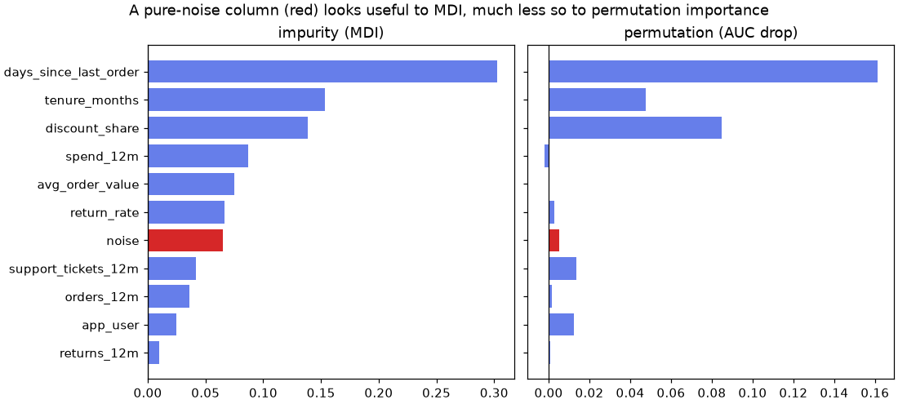

🌲 Lesson 5.2: Bagging and Random Forests
Turn one jumpy decision tree into a steady crowd: train many trees on resampled customers, average their opinions, and get a free validation score along the way.
🎯 Learning Objectives
By the end of this lesson, you will be able to:
- Draw a bootstrap sample and explain why it contains about 63% of the original rows
- Build a bagged ensemble by hand and with
BaggingClassifier(estimator=...), and explain why averaging reduces variance - Explain how a random forest decorrelates its trees with
max_features, and tunen_estimators,max_featuresandmin_samples_leaf - Use out-of-bag predictions as a built-in validation estimate
- Compare impurity-based and permutation importance, and recognize the bias of the first
In This Lesson
🧭 Ask the Crowd
Lesson 5.1 ended with a problem. Three unlimited trees, each trained on a slightly different 80% of the same customers, disagreed about one test customer in four. A single deep tree has low bias (it can represent almost any pattern) but high variance: its predictions swing with every small change in the training data.
💡 Mental Model: A Panel of New Hires
Remember the new hire from Lesson 1.1 studying case files? One very diligent new hire who memorizes every file makes confident, quirky judgments. Now hire a panel of 100. Each one studies their own random stack of files: drawn from the same archive, with some files appearing twice and others missing. When a new customer arrives, everyone gives an opinion and you take the average.
Each panelist is still quirky, but their quirks point in different directions and largely cancel out. What they agree on is the real pattern. That is bagging. A random forest adds one more rule: at every decision, each panelist may only look at a random handful of the columns, which forces them to disagree more usefully.
The math behind "quirks cancel out" fits in one line. If you average n models whose predictions each have variance σ² and are correlated with each other by ρ (rho), the average has variance:
💡 Variance of an Average
ρσ² + (1 − ρ)σ² / n. More models shrink the second term toward zero, but the first term stays: averaging cannot remove the error the models share. So there are two levers: use many models (bigger n), and make them less alike (smaller ρ). Bagging pulls the first lever; a random forest pulls both.
In a picture: each "sample" below is a bootstrap sample of the training customers (next section), each tree is grown to full depth on its own sample, and the ensemble's prediction is the average of the trees' churn probabilities.
🤔 Why This Matters
Random forests are among the most dependable models for tabular data: they need little preprocessing, few settings, almost never fail badly, and come with a built-in validation score. Even when gradient boosting (Lesson 5.3) wins by a little, a forest is the baseline it has to beat. And the idea underneath, averaging many unstable models, appears all over machine learning.
🎒 The Bootstrap
A bootstrap sample draws n rows from a table of n rows with replacement: after each draw the row goes back in the pot, so it can be picked again. Same size as the original, but with duplicates and gaps. Set up the usual split and draw one:
import numpy as np
import pandas as pd
import matplotlib.pyplot as plt
from sklearn.model_selection import train_test_split
from sklearn.tree import DecisionTreeClassifier
from sklearn.metrics import roc_auc_score
customers = pd.read_csv("data/customers_churn.csv")
features = ["tenure_months", "orders_12m", "spend_12m", "avg_order_value", "days_since_last_order",
"returns_12m", "return_rate", "support_tickets_12m", "discount_share", "app_user"]
X = customers[features]
y = customers["churned"]
X_train, X_test, y_train, y_test = train_test_split(X, y, test_size=0.25, stratify=y, random_state=42)
rng = np.random.default_rng(42)
n = len(X_train)
rows = rng.integers(0, n, size=n) # n draws with replacement
times_drawn = np.bincount(rows, minlength=n)
print(f"draws: {len(rows)}, distinct customers: {np.count_nonzero(times_drawn)} ({np.count_nonzero(times_drawn) / n:.1%})")
print("how many customers were drawn 0, 1, 2, ... times:", np.bincount(times_drawn))
print(f"theory: 1 - (1 - 1/n)^n = {1 - (1 - 1 / n) ** n:.3f}")Output
draws: 4500, distinct customers: 2830 (62.9%)
how many customers were drawn 0, 1, 2, ... times: [1670 1626 840 281 65 17 1]
theory: 1 - (1 - 1/n)^n = 0.632Each customer has a (1 − 1/n) chance of being missed on every draw, so the chance of being missed all n times is (1 − 1/n)ⁿ, which approaches 1/e ≈ 0.368 for large n. So a bootstrap sample contains about 63.2% of the distinct customers, some of them two, three or more times, and leaves out the other 36.8%. Those left-out customers are called out-of-bag (OOB), and they will turn out to be very useful.
💡 Why Seeds Matter Here
Everything in this lesson is random on purpose: bootstrap samples, feature choices, permutations. np.random.default_rng(42) and random_state=42 make your run match this page. In real work you also rerun with other seeds to check that a conclusion does not depend on one lucky draw.
🛠️ Bagging by Hand
Bagging is short for bootstrap aggregating: fit one model per bootstrap sample, then aggregate their predictions (average the probabilities, or take a majority vote). Build it yourself with 100 unlimited trees, the worst-behaved model from Lesson 5.1:
single = DecisionTreeClassifier(random_state=42).fit(X_train, y_train)
print(f"one unlimited tree: test ROC AUC {roc_auc_score(y_test, single.predict_proba(X_test)[:, 1]):.3f}")
tree_probas = []
for i in range(100):
rows = rng.integers(0, n, size=n)
tree = DecisionTreeClassifier(random_state=42).fit(X_train.iloc[rows], y_train.iloc[rows])
tree_probas.append(tree.predict_proba(X_test)[:, 1])
tree_probas = np.array(tree_probas) # 100 trees x 1,500 test customers
for k in [1, 5, 10, 25, 50, 100]:
print(f"average of {k:3d} trees: test ROC AUC {roc_auc_score(y_test, tree_probas[:k].mean(axis=0)):.3f}")Output
one unlimited tree: test ROC AUC 0.683
average of 1 trees: test ROC AUC 0.668
average of 5 trees: test ROC AUC 0.801
average of 10 trees: test ROC AUC 0.825
average of 25 trees: test ROC AUC 0.835
average of 50 trees: test ROC AUC 0.842
average of 100 trees: test ROC AUC 0.848Same algorithm, same settings, same data, and the AUC climbs from about 0.68 to about 0.85 just by averaging. Nothing about any individual tree improved: each one is still an overfitted memorizer. What improved is that their mistakes partly cancel. Notice the diminishing returns: the first 10 trees give most of the gain; the last 50 add less than 0.01.
Look at a single customer to see why averaging also fixes the "all 0s and 1s" problem from Lesson 5.1. Pick the test customer the panel is most divided about:
panel = tree_probas.mean(axis=0)
divided = int(np.argmin(np.abs(panel - 0.5)))
print(f"test customer {customers.loc[X_test.index[divided], 'customer_id']}: "
f"{panel[divided]:.2f} average churn vote, really churned: {y_test.iloc[divided]}")
print("first 20 trees say:", tree_probas[:20, divided])
print("distinct probabilities: one tree", len(np.unique(tree_probas[0])), "| the panel", len(np.unique(panel)))Output
test customer C105686: 0.50 average churn vote, really churned: 1
first 20 trees say: [1. 0. 1. 1. 0. 0. 0. 1. 1. 1. 0. 1. 0. 1. 1. 1. 0. 1. 1. 1.]
distinct probabilities: one tree 2 | the panel 99Each tree is certain, one way or the other; the panel is honestly unsure. And while one tree gives almost every customer a 0 or a 1, the panel produces many distinct probabilities, so it can rank customers finely enough to pick a top 50.
📦 BaggingClassifier
scikit-learn packages the loop as BaggingClassifier (and BaggingRegressor). Pass the model to bag as estimator=; it can be any classifier, not only a tree.
from sklearn.ensemble import BaggingClassifier
bagging = BaggingClassifier(estimator=DecisionTreeClassifier(), n_estimators=100, random_state=42)
bagging.fit(X_train, y_train)
print(f"BaggingClassifier, 100 trees: test ROC AUC {roc_auc_score(y_test, bagging.predict_proba(X_test)[:, 1]):.3f}")
print(len(bagging.estimators_), "fitted trees; first tree trained on", len(np.unique(bagging.estimators_samples_[0])), "distinct customers")Output
BaggingClassifier, 100 trees: test ROC AUC 0.849
100 fitted trees; first tree trained on 2834 distinct customersThe same result as your loop, give or take the luck of the draws. estimators_ holds the fitted trees and estimators_samples_ the rows each one was trained on. Other options: max_samples (draw fewer rows per model), max_features (give each model a random subset of columns), and bootstrap=False (sample without replacement, called pasting).
⚠️ Bagging Helps Unstable Models
Bagging reduces variance. A deep tree has lots of it, so bagging helps enormously. Logistic regression or k-nearest neighbors with a large k barely change from one bootstrap sample to the next, so bagging them gains almost nothing (Exercise 2 checks this). Bagging also cannot fix bias: averaging 100 depth-1 stumps that all ask the same question still gives a one-question model.
🌲 Random Forests: One More Twist
Bagged trees have a weakness: they are too alike. Recency is so useful that almost every tree asks about it first, so they share their top splits and many of their errors (the ρσ² term). A random forest fixes this with one change: at each split, the tree may only choose among a random subset of the features. In RandomForestClassifier that subset size is max_features, by default "sqrt": √10 ≈ 3 of the 10 features here. Some trees must make do without recency at the top, and they find other useful patterns.
from sklearn.ensemble import RandomForestClassifier
forest = RandomForestClassifier(n_estimators=100, random_state=42, n_jobs=-1).fit(X_train, y_train)
print(f"random forest, 100 trees: test ROC AUC {roc_auc_score(y_test, forest.predict_proba(X_test)[:, 1]):.3f}")
def per_tree(ensemble):
"""Churn probabilities of every tree in an ensemble, one row per tree."""
X_array = X_test.to_numpy() # the inner trees were fitted without column names
return np.array([t.predict_proba(X_array)[:, 1] for t in ensemble.estimators_])
for name, ensemble in [("bagging", bagging), ("random forest", forest)]:
probas = per_tree(ensemble)
one_tree = np.mean([roc_auc_score(y_test, p) for p in probas])
rho = np.corrcoef(probas)[np.triu_indices(len(probas), k=1)].mean()
print(f"{name:14s} average single-tree AUC {one_tree:.3f} average correlation between trees {rho:.3f}")Output
random forest, 100 trees: test ROC AUC 0.855
bagging average single-tree AUC 0.666 average correlation between trees 0.354
random forest average single-tree AUC 0.648 average correlation between trees 0.288This is the variance formula in action. Each forest tree is a little worse on its own than a bagged tree (it was often denied the best feature), but the forest's trees are less correlated with each other, and the average of less-alike trees is better. n_jobs=-1 trains the trees in parallel on all your CPU cores; they are independent, so this is an easy speed-up.
How many trees are enough? Average the first k trees of each ensemble, for every k from 1 to 100:
ks = np.arange(1, 101)
fig, ax = plt.subplots(figsize=(9, 4), layout="constrained")
for name, ensemble, color in [("bagging", bagging, "#999999"), ("random forest", forest, "#667eea")]:
probas = per_tree(ensemble)
curve = [roc_auc_score(y_test, probas[:k].mean(axis=0)) for k in ks]
ax.plot(ks, curve, color=color, label=name)
print(f"{name:14s} AUC with 1, 10, 50, 100 trees:", [round(curve[k - 1], 3) for k in [1, 10, 50, 100]])
ax.axhline(roc_auc_score(y_test, single.predict_proba(X_test)[:, 1]), color="black", linestyle="--",
linewidth=1, label="one unlimited tree")
ax.set_xlabel("Number of trees averaged")
ax.set_ylabel("Test ROC AUC")
ax.set_title("Averaging trees: big gains early, then a plateau")
ax.legend(loc="lower right")
plt.show()Output
bagging AUC with 1, 10, 50, 100 trees: [0.677, 0.821, 0.846, 0.849]
random forest AUC with 1, 10, 50, 100 trees: [0.649, 0.806, 0.849, 0.855]
The two curves tell the variance-formula story again. With a handful of trees, the stronger individual bagged trees win. As n grows, the (1 − ρ)σ²/n term fades and the shared-error term ρσ² is what is left, and that is where the forest's lower correlation pays off.
✅ More Trees Never Overfit
Adding trees does not make a forest more complex in the way a deeper tree is more complex: it only makes the average more precise. The curve flattens; it does not turn down. The cost of more trees is time and memory, not accuracy. A few hundred is typical; check that your score has plateaued.
🧪 Out-of-Bag Validation
Each tree never saw about 37% of the training customers. So for every training customer there is a sub-panel of trees (about a third of the forest) that did not train on them. Their average prediction is an honest, unseen-data prediction, made without holding anything out. Ask for it with oob_score=True:
from sklearn.model_selection import StratifiedKFold, cross_val_score
oob_forest = RandomForestClassifier(n_estimators=300, min_samples_leaf=5, oob_score=True, random_state=42, n_jobs=-1)
oob_forest.fit(X_train, y_train)
oob_proba = oob_forest.oob_decision_function_[:, 1] # one OOB probability per training customer
cv = StratifiedKFold(n_splits=5, shuffle=True, random_state=42)
cv_auc = cross_val_score(oob_forest, X_train, y_train, cv=cv, scoring="roc_auc").mean()
print(f"OOB accuracy (oob_score_) {oob_forest.oob_score_:.3f}")
print(f"OOB ROC AUC {roc_auc_score(y_train, oob_proba):.3f}")
print(f"5-fold CV ROC AUC {cv_auc:.3f}")
print(f"test ROC AUC {roc_auc_score(y_test, oob_forest.predict_proba(X_test)[:, 1]):.3f}")Output
OOB accuracy (oob_score_) 0.872
OOB ROC AUC 0.866
5-fold CV ROC AUC 0.868
test ROC AUC 0.865The OOB estimate agrees closely with 5-fold cross-validation, at one fifth of the cost: one fit instead of five. oob_score_ is accuracy by default; oob_decision_function_ holds the OOB probabilities, so you can compute any metric from them, as here with ROC AUC.
⚠️ Where OOB Is Not Enough
OOB validation only covers the forest itself. If preprocessing learns from the target (target encoding, feature selection by correlation with churn), it has already seen every training row, so the OOB score is optimistic: use cross-validation of the whole pipeline instead (Lesson 2.2). It also assumes rows are independent: for data split by time or by group, use a time-aware or grouped split. And the test set stays locked until the end, as always.
🎛️ What to Tune
| Hyperparameter | Default | Effect |
|---|---|---|
n_estimators | 100 | More trees: steadier, slower, never worse. Raise until the score plateaus. |
max_features | "sqrt" | Features tried per split. Smaller: less correlated, individually weaker trees. None (all features) turns the forest back into bagging. |
min_samples_leaf | 1 | Larger leaves: smoother probabilities, less overfitting of each tree. |
max_depth, max_leaf_nodes | None | Alternative size limits for each tree. |
max_samples | None | Rows per bootstrap sample; a fraction such as 0.5 speeds up big data. |
class_weight | None | "balanced" or "balanced_subsample" for rare classes (Lesson 2.5). |
The OOB score makes tuning cheap: one fit per setting. Try three values of max_features against three leaf sizes:
results = []
for max_features in ["sqrt", 0.5, None]:
for leaf in [1, 5, 20]:
model = RandomForestClassifier(n_estimators=200, max_features=max_features, min_samples_leaf=leaf,
oob_score=True, random_state=42, n_jobs=-1).fit(X_train, y_train)
results.append({"max_features": str(max_features), "min_samples_leaf": leaf,
"oob_auc": roc_auc_score(y_train, model.oob_decision_function_[:, 1])})
grid = pd.DataFrame(results).pivot(index="max_features", columns="min_samples_leaf", values="oob_auc")
print(grid.round(3))Output
min_samples_leaf 1 5 20
max_features
0.5 0.856 0.866 0.870
None 0.851 0.862 0.867
sqrt 0.857 0.865 0.870Two patterns. Larger leaves help in every row (about +0.013 AUC from 1 to 20): fully grown trees overfit even inside a forest, and larger leaves give smoother probabilities. And max_features=None (plain bagging) is the weakest row, but only by a few thousandths: with ten features, several of them redundant, there is limited room for decorrelation. So the defaults plus a moderate leaf size are a sound start. Random forests are famously forgiving to tune.
💡 Extra-Trees: Even More Random
ExtraTreesClassifier (extremely randomized trees) goes one step further: at each split it draws a random threshold for each candidate feature instead of searching for the best one, and by default it does not bootstrap. Trees are faster to grow and even less correlated, but individually weaker. Sometimes it beats a random forest, sometimes not; Exercise 3 compares them on this data.
📊 Importance You Can Check
A forest's feature_importances_ averages the impurity-based importance (MDI) of its trees. Lesson 5.1 warned that MDI favors features with many distinct values. Here is a test you can run on any model: add a column of pure random noise and see how much importance it gets. Then compare with permutation importance, which shuffles one column of the test set at a time and measures how much the test AUC drops.
from sklearn.inspection import permutation_importance
noise_rng = np.random.default_rng(42)
X_train_noisy = X_train.assign(noise=noise_rng.normal(size=len(X_train)))
X_test_noisy = X_test.assign(noise=noise_rng.normal(size=len(X_test)))
noisy_forest = RandomForestClassifier(n_estimators=300, min_samples_leaf=5, random_state=42, n_jobs=-1)
noisy_forest.fit(X_train_noisy, y_train)
perm = permutation_importance(noisy_forest, X_test_noisy, y_test, scoring="roc_auc", n_repeats=5, random_state=42)
importance = pd.DataFrame({"impurity (MDI)": noisy_forest.feature_importances_,
"permutation (AUC drop)": perm.importances_mean},
index=X_train_noisy.columns).sort_values("impurity (MDI)")
print(importance.iloc[::-1].round(3))
fig, axes = plt.subplots(1, 2, figsize=(10, 4.5), layout="constrained", sharey=True)
for ax, col in zip(axes, importance.columns):
colors = ["#d62728" if name == "noise" else "#667eea" for name in importance.index]
ax.barh(importance.index, importance[col], color=colors, label=col)
ax.set_title(col)
ax.axvline(0, color="black", linewidth=0.8)
fig.suptitle("A pure-noise column (red) looks useful to MDI, much less so to permutation importance")
plt.show()Output
impurity (MDI) permutation (AUC drop)
days_since_last_order 0.302 0.161
tenure_months 0.153 0.048
discount_share 0.139 0.085
spend_12m 0.087 -0.002
avg_order_value 0.075 0.001
return_rate 0.066 0.003
noise 0.065 0.005
support_tickets_12m 0.042 0.014
orders_12m 0.036 0.002
app_user 0.025 0.013
returns_12m 0.010 0.001
A column of random numbers outranks four real features on MDI (support tickets, orders, app use and returns), because with thousands of distinct values it can always find some threshold that happens to separate a few training customers, especially deep in the trees where leaves are small. On the test set, permutation importance gives it 0.005, about a thirtieth of recency's, and below support tickets and app use: the chance splits do not generalize. (It is not exactly zero because the forest did use the column, so shuffling it adds a little random jitter to the predictions.) Permutation importance also moves spend_12m and avg_order_value down: they look busy inside the trees, but the forest barely needs them, because other features carry the same information.
⚠️ Still a Description of the Model
Permutation importance tells you how much this model's predictions on this data depend on a column. It is not a causal effect: a model may lean on recency because lapsed customers churn, not because reminding them to order would keep them. With strongly correlated features, permutation importance can also understate each one (the model falls back on its twin). Lesson 7.1 covers it properly, and Lesson 7.2 adds SHAP values.
⚠️ Common Mistakes
1. The Old base_estimator Argument
BaggingClassifier(base_estimator=DecisionTreeClassifier(), n_estimators=50)Error
TypeError: BaggingClassifier.__init__() got an unexpected keyword argument 'base_estimator'What it means: older tutorials (and older versions of this course) used base_estimator=. scikit-learn renamed it estimator= and has since removed the old name. Fix: BaggingClassifier(estimator=DecisionTreeClassifier(), ...). The same rename applies to AdaBoostClassifier.
2. Asking for OOB Without the Bootstrap
RandomForestClassifier(bootstrap=False, oob_score=True, random_state=42).fit(X_train, y_train)Error
ValueError: Out of bag estimation only available if bootstrap=TrueWhat it means: without bootstrap sampling every tree sees every row, so no row is ever out of the bag. Fix: keep bootstrap=True (the default) when you want OOB scores, or use cross-validation.
3. Too Few Trees for an OOB Score
import warnings
with warnings.catch_warnings(record=True) as caught:
warnings.simplefilter("always")
tiny = RandomForestClassifier(n_estimators=5, oob_score=True, random_state=42).fit(X_train, y_train)
print(caught[0].category.__name__)
print(str(caught[0].message).splitlines()[0])
print(f"OOB accuracy anyway: {tiny.oob_score_:.3f}")Output
UserWarning
Some inputs do not have OOB scores. This probably means too few trees were used to compute any reliable OOB estimates.
OOB accuracy anyway: 0.831What it means: with 5 trees, each customer has a (0.632)⁵ ≈ 10% chance of being in every bootstrap sample, so some customers have no OOB prediction at all, and the rest are judged by only one or two trees. The number printed is not trustworthy. Fix: use enough trees (100 or more) whenever you rely on OOB.
4. Judging a Forest on Its Training Data
train_auc = roc_auc_score(y_train, forest.predict_proba(X_train)[:, 1])
oob_check = RandomForestClassifier(n_estimators=100, oob_score=True, random_state=42, n_jobs=-1).fit(X_train, y_train)
print(f"training AUC {train_auc:.3f} OOB AUC {roc_auc_score(y_train, oob_check.oob_decision_function_[:, 1]):.3f}")Output (no error, and that is the problem)
training AUC 1.000 OOB AUC 0.851What happened: every training customer was in the bootstrap sample of about 63% of the trees, which memorized them. A near-perfect training score says nothing about new customers. Fix: judge a forest by OOB, cross-validation or the test set, never by predict on its own training rows. (This is also why a forest's training predictions must never be fed into a second model as features; Lesson 5.4 shows the right way.)
5. Forgetting random_state
p1 = RandomForestClassifier(n_estimators=100).fit(X_train, y_train).predict_proba(X_test)[:, 1]
p2 = RandomForestClassifier(n_estimators=100).fit(X_train, y_train).predict_proba(X_test)[:, 1]
print("same predictions twice:", np.array_equal(p1, p2))Output (no error, and that is the problem)
same predictions twice: FalseWhat happened: without a seed, each fit draws different bootstrap samples and feature subsets, so scores change slightly every run. When you compare two settings, you cannot tell an improvement from luck, and a colleague cannot reproduce your result. Fix: set random_state on every forest; to judge how much luck matters, deliberately rerun with a few different seeds.
🛠️ Project: A Churn Forest and a Call List
In Lesson 5.1 you gave the care team a readable rule book. Now the team wants the best possible list of 50 customers to call this month. Build a random forest on all the useful columns inside a pipeline, tune it with OOB scores, compare it on the test set with a baseline, logistic regression and the rule tree, build the call list and check which columns the forest really relies on. Work in a new notebook called lesson_5_2_project. Allow about 40 minutes.
🛠️ Step 1: Load, choose columns and split (5 min)
The same columns and split as the Lesson 5.1 project.
import numpy as np
import pandas as pd
from sklearn.model_selection import train_test_split
customers = pd.read_csv("data/customers_churn.csv")
numeric = ["tenure_months", "orders_12m", "spend_12m", "avg_order_value", "days_since_last_order",
"returns_12m", "return_rate", "support_tickets_12m", "discount_share", "app_user", "email_opens_90d"]
categorical = ["home_store", "age_group", "loyalty_tier", "preferred_category"]
train, test = train_test_split(customers, test_size=0.25, stratify=customers["churned"], random_state=42)
X_train, y_train = train[numeric + categorical], train["churned"]
X_test, y_test = test[numeric + categorical], test["churned"]
print(X_train.shape, X_test.shape, test["customer_id"].iloc[0])Output
(4500, 15) (1500, 15) C102112🛠️ Step 2: A forest pipeline, tuned out-of-bag (10 min)
Like a single tree, a forest needs no scaling and handles the gaps in numeric columns. The one-hot encoder learns only the category names, never the target, so the OOB score stays honest. Try a few leaf sizes.
from sklearn.compose import ColumnTransformer
from sklearn.preprocessing import OneHotEncoder
from sklearn.pipeline import make_pipeline
from sklearn.ensemble import RandomForestClassifier
from sklearn.metrics import roc_auc_score
tree_prep = ColumnTransformer(
[("num", "passthrough", numeric),
("cat", OneHotEncoder(handle_unknown="ignore", sparse_output=False), categorical)],
verbose_feature_names_out=False,
).set_output(transform="pandas")
for leaf in [1, 5, 10, 20, 40]:
pipe = make_pipeline(tree_prep, RandomForestClassifier(n_estimators=300, min_samples_leaf=leaf, oob_score=True,
random_state=42, n_jobs=-1))
pipe.fit(X_train, y_train)
oob = roc_auc_score(y_train, pipe[-1].oob_decision_function_[:, 1])
print(f"min_samples_leaf={leaf:2d} OOB ROC AUC {oob:.3f}")Output
min_samples_leaf= 1 OOB ROC AUC 0.863
min_samples_leaf= 5 OOB ROC AUC 0.865
min_samples_leaf=10 OOB ROC AUC 0.868
min_samples_leaf=20 OOB ROC AUC 0.866
min_samples_leaf=40 OOB ROC AUC 0.864Pick the best leaf size from this table (not from the test set) and refit it as forest in the next step.
🛠️ Step 3: One test, four models (10 min)
Fit the chosen forest and three competitors on the training set, then score all four on the test set, once.
from sklearn.dummy import DummyClassifier
from sklearn.impute import SimpleImputer
from sklearn.preprocessing import StandardScaler
from sklearn.linear_model import LogisticRegression
from sklearn.tree import DecisionTreeClassifier
logit_prep = ColumnTransformer([
("num", make_pipeline(SimpleImputer(strategy="median"), StandardScaler()), numeric),
("cat", make_pipeline(SimpleImputer(strategy="most_frequent"), OneHotEncoder(handle_unknown="ignore")), categorical),
])
models = {
"do-nothing baseline": DummyClassifier(strategy="most_frequent"),
"logistic regression": make_pipeline(logit_prep, LogisticRegression(max_iter=1000)),
"rule tree (5.1)": make_pipeline(tree_prep, DecisionTreeClassifier(max_leaf_nodes=12, min_samples_leaf=30, random_state=42)),
"random forest": make_pipeline(tree_prep, RandomForestClassifier(n_estimators=300, min_samples_leaf=10,
random_state=42, n_jobs=-1)),
}
proba = {}
for name, model in models.items():
proba[name] = model.fit(X_train, y_train).predict_proba(X_test)[:, 1]
print(f"{name:20s} test ROC AUC {roc_auc_score(y_test, proba[name]):.3f}")
forest = models["random forest"]Output
do-nothing baseline test ROC AUC 0.500
logistic regression test ROC AUC 0.825
rule tree (5.1) test ROC AUC 0.837
random forest test ROC AUC 0.863🛠️ Step 4: The call list (5 min)
The care team can make 50 calls. Count how many of each model's top 50 really churned.
expected_random = 50 * y_test.mean()
print(f"random list: {expected_random:.1f} churners expected")
for name in ["logistic regression", "rule tree (5.1)", "random forest"]:
top50 = np.argsort(-proba[name], kind="stable")[:50]
print(f"{name:20s} {y_test.iloc[top50].sum()} of 50 really churned")Output
random list: 8.3 churners expected
logistic regression 31 of 50 really churned
rule tree (5.1) 36 of 50 really churned
random forest 41 of 50 really churnedThe forest's list reaches 41 real churners, five times a random list and ten more than logistic regression. The rule tree lands in between, but notice how it builds its list: everyone in a leaf shares one score, so its top 50 is a whole 42-customer leaf plus 8 customers picked arbitrarily from the next tied leaf. The forest scores every customer individually.
🛠️ Step 5: What does the forest rely on? (5 min)
Run permutation importance on the whole pipeline with the raw test table. Each original column is shuffled as a unit, so a categorical column counts once, not once per one-hot column.
from sklearn.inspection import permutation_importance
perm = permutation_importance(forest, X_test, y_test, scoring="roc_auc", n_repeats=5, random_state=42)
drops = pd.Series(perm.importances_mean, index=X_test.columns).sort_values(ascending=False)
print(drops.round(3))Output
days_since_last_order 0.144
discount_share 0.070
tenure_months 0.037
support_tickets_12m 0.012
app_user 0.010
email_opens_90d 0.008
return_rate 0.004
loyalty_tier 0.002
avg_order_value 0.001
returns_12m 0.001
age_group 0.000
home_store -0.000
preferred_category -0.000
spend_12m -0.001
orders_12m -0.003
dtype: float64Recency, discount share and tenure carry the model, followed by app use and support tickets; the categorical columns add little once the behavior columns are known. Remember: this describes what the forest uses, not what causes churn.
🛠️ Step 6: Save the list and summarize (5 min)
call_list = (test[["customer_id"]].assign(churn_probability=proba["random forest"])
.nlargest(50, "churn_probability").round(3))
call_list.to_csv("call_list.csv", index=False)
print(f"""Churn forest summary
Test customers : {len(test):,}
Forest test ROC AUC : {roc_auc_score(y_test, proba['random forest']):.3f} (baseline 0.500)
Real churners in top 50 : {y_test.loc[call_list.index].sum()} (random list: {expected_random:.1f})
Top three columns : {', '.join(drops.index[:3])}
Saved : call_list.csv ({len(call_list)} rows)""")Output
Churn forest summary
Test customers : 1,500
Forest test ROC AUC : 0.863 (baseline 0.500)
Real churners in top 50 : 41 (random list: 8.3)
Top three columns : days_since_last_order, discount_share, tenure_months
Saved : call_list.csv (50 rows)✅ Project Completion Checklist
- The forest lives in a pipeline with the encoder, and its leaf size was chosen with OOB scores on the training set
- All four models were fitted on the training set and scored on the test set exactly once
- You can say how much the forest beats logistic regression and the rule tree on test ROC AUC
- You counted real churners in each model's top 50 and compared with a random list
- Permutation importance was computed on the test set, on the original columns
call_list.csvholds 50 customer IDs and probabilities, with no outcome column
🏋️ Hands-on Exercises
Try each one before opening the solution. These continue in the project notebook, so X_train, tree_prep, logit_prep and friends already exist.
🏋️ Exercise 1: The 63% Rule
Compute 1 − (1 − 1/n)ⁿ for n = 10, 100, 4,500 and 1,000,000, and compare with 1 − 1/e. Then draw five bootstrap samples of size 4,500 with np.random.default_rng(7) and print the share of distinct rows in each.
💡 Hint
np.e is Euler's number. For the simulation, len(np.unique(rng.integers(0, n, size=n))) / n is the share of distinct rows.
✅ Solution
for size in [10, 100, 4_500, 1_000_000]:
print(f"n={size:>9,} share in a bootstrap sample {1 - (1 - 1 / size) ** size:.4f}")
print(f"limit 1 - 1/e {1 - 1 / np.e:.4f}")
rng7 = np.random.default_rng(7)
shares = [len(np.unique(rng7.integers(0, 4_500, size=4_500))) / 4_500 for _ in range(5)]
print("simulated:", np.round(shares, 3))Output
n= 10 share in a bootstrap sample 0.6513
n= 100 share in a bootstrap sample 0.6340
n= 4,500 share in a bootstrap sample 0.6322
n=1,000,000 share in a bootstrap sample 0.6321
limit 1 - 1/e 0.6321
simulated: [0.631 0.634 0.628 0.628 0.63 ]The share settles at 63.2% almost immediately; even 100 rows are close. The simulated samples wobble around it by a fraction of a percent.
🏋️ Exercise 2: Bagging a Stable Model
Using the ten numeric features from the start of the lesson, cross-validate (5 folds, ROC AUC) a make_pipeline(StandardScaler(), LogisticRegression()) model, and the same pipeline wrapped in BaggingClassifier(..., n_estimators=30, random_state=42). Does bagging help? Why or why not?
💡 Hint
Pass the whole pipeline as estimator=: bagging works with any classifier, including a pipeline. Recreate cv with StratifiedKFold(n_splits=5, shuffle=True, random_state=42). One catch: BaggingClassifier hands its estimator NumPy arrays, not DataFrames, so a pipeline whose ColumnTransformer picks columns by name (like the project's logit_prep) fails with "Specifying the columns using strings is only supported for dataframes". That is why this exercise uses an all-numeric pipeline.
✅ Solution
from sklearn.ensemble import BaggingClassifier
from sklearn.model_selection import StratifiedKFold, cross_val_score
ten = ["tenure_months", "orders_12m", "spend_12m", "avg_order_value", "days_since_last_order",
"returns_12m", "return_rate", "support_tickets_12m", "discount_share", "app_user"]
cv = StratifiedKFold(n_splits=5, shuffle=True, random_state=42)
logit = make_pipeline(StandardScaler(), LogisticRegression())
for name, model in [("logistic regression", logit),
("bagged logistic", BaggingClassifier(estimator=logit, n_estimators=30, random_state=42))]:
scores = cross_val_score(model, X_train[ten], y_train, cv=cv, scoring="roc_auc")
print(f"{name:20s} CV ROC AUC {scores.mean():.4f}")Output
logistic regression CV ROC AUC 0.8295
bagged logistic CV ROC AUC 0.8292No real change. A logistic regression trained on a bootstrap sample is nearly the same model as one trained on the full data: there is little variance to average away. Its limitation is bias (a straight-line boundary), which bagging cannot fix. Bag high-variance models; for low-variance ones, look elsewhere (boosting in Lesson 5.3 attacks bias).
🏋️ Exercise 3: Extra-Trees vs Random Forest
With the same ten features, compare RandomForestClassifier and ExtraTreesClassifier, both with 300 trees, min_samples_leaf=5, oob_score=True and random_state=42, by OOB ROC AUC. Extra-Trees needs bootstrap=True to have an OOB score.
💡 Hint
from sklearn.ensemble import ExtraTreesClassifier. Its default is bootstrap=False, which would raise the error from Common Mistake 2.
✅ Solution
from sklearn.ensemble import ExtraTreesClassifier
settings = dict(n_estimators=300, min_samples_leaf=5, oob_score=True, random_state=42, n_jobs=-1)
for name, model in [("random forest", RandomForestClassifier(**settings)),
("extra-trees", ExtraTreesClassifier(bootstrap=True, **settings))]:
model.fit(X_train[ten], y_train)
print(f"{name:14s} OOB ROC AUC {roc_auc_score(y_train, model.oob_decision_function_[:, 1]):.3f}")Output
random forest OOB ROC AUC 0.866
extra-trees OOB ROC AUC 0.862Here the random forest is slightly ahead. The churn effects are sharp thresholds (recency near 170 days, discount share near 0.35), and searching for the best threshold finds them, while random thresholds only approximate them. On data with smoother effects Extra-Trees is often as good and faster. The point is not which one wins in general: it is that you check, with validation data.
🏋️ Exercise 4: A Forest Cannot Extrapolate (Stretch)
Predict weekly units_sold in data/weekly_demand.csv: train on 2024 and test on 2025, with the features ["price", "discount_pct", "promo", "holiday_week", "avg_high_temp_f", "week_of_year", "store_sqft"] plus one-hot store, product_id and category. Use RandomForestRegressor(n_estimators=200, min_samples_leaf=3, random_state=42, n_jobs=-1). Report the test MAE against a per-product-mean baseline, then compare the total units the forest predicts for 2025 with the real 2025 total and the 2024 total. What do you notice?
💡 Hint
pd.get_dummies(..., dtype=int) is enough for the one-hot step here, because training and test share the same categories. The per-product baseline is train.groupby("product_id")["units_sold"].mean() mapped onto the test rows.
✅ Solution
from sklearn.ensemble import RandomForestRegressor
from sklearn.metrics import mean_absolute_error
demand = pd.read_csv("data/weekly_demand.csv")
cols = ["price", "discount_pct", "promo", "holiday_week", "avg_high_temp_f", "week_of_year", "store_sqft"]
Xd = pd.get_dummies(demand[cols + ["store", "product_id", "category"]], dtype=int)
is_train = demand["year"] == 2024
d_train, d_test = demand[is_train], demand[~is_train]
reg = RandomForestRegressor(n_estimators=200, min_samples_leaf=3, random_state=42, n_jobs=-1)
reg.fit(Xd[is_train], d_train["units_sold"])
pred = reg.predict(Xd[~is_train])
per_product = d_test["product_id"].map(d_train.groupby("product_id")["units_sold"].mean())
print(f"per-product mean MAE {mean_absolute_error(d_test['units_sold'], per_product):.2f}")
print(f"random forest MAE {mean_absolute_error(d_test['units_sold'], pred):.2f}")
print(f"units 2024 actual {d_train['units_sold'].sum():,} 2025 actual {d_test['units_sold'].sum():,} "
f"2025 forest {pred.sum():,.0f}")Output
per-product mean MAE 13.42
random forest MAE 8.44
units 2024 actual 123,995 2025 actual 128,970 2025 forest 121,744The forest cuts the error well below the baseline, because it learns price, promotion, holiday and seasonal effects per product. But look at the totals: sales grew from 2024 to 2025, and the forest predicts slightly less than 2024. Every prediction is an average of 2024 leaf values, so a forest can never forecast beyond the range it was trained on: it cannot follow a trend into the future. The usual fixes are to model the trend separately, predict changes rather than levels, or use a model that can extrapolate. Lesson 10.4 returns to forecasting.
🎯 Quick Quiz
🎯 Check Your Understanding
Question 1: You draw a bootstrap sample of 10,000 rows from a table of 10,000 rows. About how many distinct rows does it contain?
Question 2: Which change makes the trees in a random forest less correlated with each other?
Question 3: In a forest fitted with oob_score=True, which trees produce the out-of-bag prediction for a particular training customer?
Question 4: A forest with 300 trees has an OOB ROC AUC of 0.866. What is the most likely result of raising n_estimators to 3,000?
Question 5: A column of random noise gets an impurity-based importance of 0.06 in a forest, but a permutation importance close to zero on the test set. What is the best conclusion?
❓ Common Questions at This Stage
Does a forest vote or average?
scikit-learn's RandomForestClassifier averages the trees' predicted probabilities (soft voting) and predicts the class with the highest average. The original random forest paper used a majority vote of class labels (hard voting). Averaging probabilities keeps more information and gives the fine-grained scores you used for the call list. RandomForestRegressor averages the trees' numeric predictions.
Can I still look at the individual trees?
Yes: forest.estimators_[0] is an ordinary fitted DecisionTreeClassifier, so export_text and plot_tree work on it. But no single tree explains the forest: each is a deep, quirky tree trained on a resample with random feature limits. To explain a forest, use model-level tools such as permutation importance and partial dependence (Lesson 7.1) or SHAP (Lesson 7.2).
Forests are large. How do I make one smaller or faster?
Memory grows with the number of trees and the number of leaves. A larger min_samples_leaf or a max_depth shrinks each tree, often with no loss, as the tuning table showed. max_samples=0.5 trains each tree on half the rows, and n_jobs=-1 uses every CPU core. If prediction speed matters a lot, gradient boosting (Lesson 5.3) usually reaches the same accuracy with smaller trees.
The churn rate is only 16.5%. Should I set class_weight?
For ranking customers (ROC AUC, a top-50 list) it usually makes little difference, because weighting mostly shifts the probabilities rather than reordering them. It matters when you use the default 0.5 threshold to make yes-or-no decisions. Lesson 2.5 covers the options, and Lesson 1.4 showed how to choose a threshold from the probabilities instead.
🌟 Going Further: Bonus Challenge
Write your own MiniForest class with fit(X, y) and predict_proba(X): for each of n_estimators trees, draw a bootstrap sample with a NumPy generator, fit DecisionTreeClassifier(max_features="sqrt", min_samples_leaf=5, random_state=i) on it, and remember which rows were out of bag. Average the trees' probabilities to predict, and compute your own OOB ROC AUC by averaging, for each training row, only the trees that did not see it. Check that your test AUC and OOB AUC are close to RandomForestClassifier's with the same settings.
📓 Learning Journal
Take five minutes to write in your learning journal (the journal.md file you started in Lesson 0.1, or a paper notebook). Jot down:
- Key concepts you learned today
- Techniques that clicked (and the ones that have not, yet)
- Questions or confusion to come back to
- Ideas to try on your own
- Progress and feelings: how did this lesson go for you?
✍️ This lesson's prompt: Explain to a colleague, using the panel of new hires, why 100 overfitted trees can predict better than one carefully pruned tree. Use the variance formula's two terms in your explanation. Then write down your project's numbers: the forest's test AUC, the rule tree's, and the two top-50 counts. When would you still hand the care team the rule tree?
📝 Lesson Summary
🎓 Key Takeaways
- A bootstrap sample draws n rows with replacement and contains about 63.2% of the distinct rows; the rest are out-of-bag
- Bagging fits one model per bootstrap sample and averages them; it reduces variance, so it helps unstable models such as deep trees
- The variance of an average is ρσ² + (1 − ρ)σ²/n: more models shrink one term, less correlated models shrink the other
- A random forest is bagged trees plus a random subset of features at every split (
max_features), which decorrelates the trees - More trees never overfit; the score plateaus. Leaf size and
max_featuresmatter more, and forests are forgiving to tune - OOB predictions give a validation score from a single fit, close to cross-validation, as long as preprocessing does not learn from the target
BaggingClassifiertakesestimator=(notbase_estimator=) and works with any model- Impurity-based importance rewards chance splits; check it with permutation importance on held-out data, and treat both as descriptions of the model
🏆 What You've Accomplished
- You built bagging from scratch and watched averaging lift an overfitted tree from 0.68 to about 0.85 AUC
- You measured the correlation between trees and saw why a forest beats plain bagging
- You validated a forest out-of-bag and matched the result against cross-validation
- You exposed a pure-noise column that impurity importance had ranked above real features
- You built a churn forest in a pipeline and a 50-customer call list that beats a logistic regression's
🔭 Looking Ahead
In Lesson 5.3: Gradient Boosting you will build a tree ensemble the opposite way. Instead of growing many independent deep trees and averaging them, boosting grows small trees one after another, each correcting the errors of the ones before. You will meet HistGradientBoostingClassifier, XGBoost and LightGBM, and see why boosting, once tuned, is so often the strongest choice for tables like Pinecrest's.
📋 Before the Next Lesson
- Keep your project notebook: Lesson 5.3 compares boosting with your forest on the same split.
- Refit the project forest with
n_estimators=50and1000. How much do the test AUC and the top-50 count move? - Bagging attacks variance. Write down, in one sentence, what kind of error a method would need to attack to improve a model that is too simple. That is boosting's job.
🌱 Encouragement for the Journey
You took the most overfitted model in the course, a tree that memorizes every customer, and turned it into one of the most reliable models there is, using nothing but resampling and averaging. That is a deep idea, and you built it by hand before letting scikit-learn do it for you. If the variance formula still feels abstract, come back to the trees curve: the quick climb is n doing its work, and the purple line overtaking the gray one is ρ.